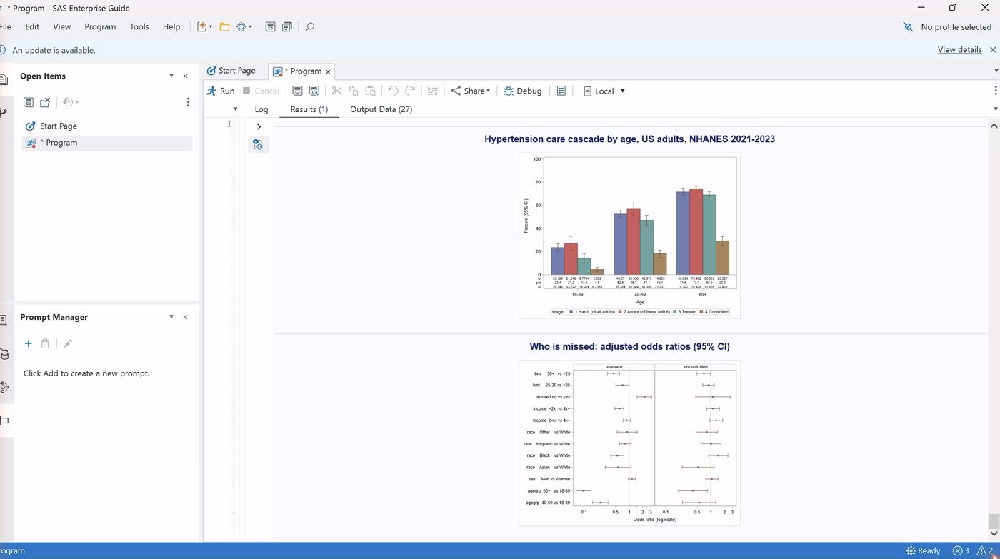
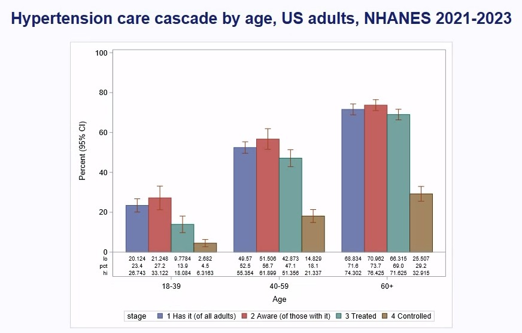
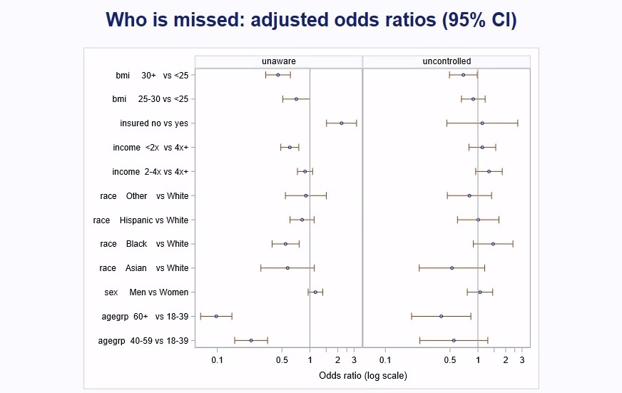

SAS · Survey statistics · 2026-10
Who Is Missed by Blood-Pressure Care
CDC's national hypertension figures rebuilt in SAS from the raw NHANES 2021–2023 survey files, with the full survey design, then survey logistic models of who doesn't know they have high blood pressure and who stays uncontrolled on treatment. Every SAS number is recomputed in Python.

One survey at one point in time, so the odds ratios are associations, not causes. One of CDC's 24 figures differs by 0.1 point (treatment at 60+, explained below). The charts are screenshots of the SAS output in Enterprise Guide.
01 — The problem
About half of US adults have high blood pressure, but only about one in five of them has it under control. Between those two numbers is a care cascade: knowing you have it, being treated, and reaching a safe reading. People drop out at every stage.
Can CDC's national figures be rebuilt from the raw survey files? And once they are, who drops out: who doesn't know, and who stays uncontrolled even on medication?
02 — What I built
One SAS program, run in SAS Enterprise Guide (SAS 9.4M9) on USF's virtual desktop, over the August 2021 – August 2023 National Health and Nutrition Examination Survey (11,933 people in 15 strata and 30 sampling units):
- PROC HTTP downloads CDC's five transport files directly, so the program needs no local data.
- PROC SURVEYMEANS estimates prevalence, awareness, treatment and control with strata, clusters and exam weights, then age-adjusts to the 2000 US population.
- PROC SURVEYLOGISTIC fits two models of who is missed.
- PROC SGPLOT / SGPANEL draw the charts.
- A clean log (0 errors, 0 warnings) carries every result as a
CSV|line.check.pyparses those lines and recomputes all 48 results in Python.
03 — How it was built
- 01
Read CDC's files straight from the web
NHANES publishes each part of the survey as a SAS transport file: demographics, blood-pressure readings, the blood-pressure questionnaire, body measures and insurance. The program fetches each one with
PROC HTTP, reads it through anXPORTlibrary, and merges the five on the person ID. Systolic and diastolic pressure are each the average of up to three readings.%macro get(f); filename f_&f temp; proc http url="https://wwwn.cdc.gov/Nchs/Data/Nhanes/Public/2021/DataFiles/&f..xpt" out=f_&f; run; libname x_&f xport "%sysfunc(pathname(f_&f))"; proc sort data=x_&f..&f out=&f; by seqn; run; %mend; %get(DEMO_L) %get(BPXO_L) %get(BPQ_L) %get(BMX_L) %get(HIQ_L) - 02
Keep everyone; use domains, not subsets
A survey's standard errors come from its design: which sampling units were picked within which strata. If you cut the file down to adults first, SAS no longer sees the whole design and the errors come out wrong. So everyone stays in, and each subgroup (adults, people with hypertension, men aged 40–59) is a
DOMAIN. Hypertension follows CDC's definition: 130/80 mm Hg or higher, or taking medication.proc surveymeans data=nh nobs mean stderr clm nomcar; strata sdmvstra; cluster sdmvpsu; weight wtmec2yr; var meds; domain hyp*agegrp; run; - 03
Rebuild CDC's figures, then age-adjust
One
SURVEYMEANScall per measure and grouping gives 24 estimates, each with a design-based standard error and 95% interval. Direct standardisation then weights the three age groups to the 2000 US population (0.420, 0.357, 0.223), so men and women can be compared without their different age mixes. - 04
Ask who is missed, within the survey's limits
Two
PROC SURVEYLOGISTICmodels. The first asks, among adults with hypertension, who is unaware. The second asks, among those taking medication, who is still uncontrolled. The predictors are age, sex, race and Hispanic origin, income relative to the poverty line, insurance and BMI.This survey has 30 sampling units in 15 strata, which leaves only 15 degrees of freedom for the variance. A model with more parameters than that can't be tested properly. So the categories are kept coarse (12 parameters), and unknown values are left out rather than given their own category.
proc surveylogistic data=nh nomcar; strata sdmvstra; cluster sdmvpsu; weight wtmec2yr; domain hyp; class agegrp(ref='18-39') sex(ref='Women') race(ref='White') income(ref='4x+') insured(ref='yes') bmi(ref='<25') / param=ref; model unaware(event='1') = agegrp sex race income insured bmi; run; - 05
Run it in Enterprise Guide; the log is the evidence
Enterprise Guide runs the program straight from GitHub at a pinned commit, so the code that ran is exactly the code in the repository. The first runs failed with useful errors. Too many parameters broke the 15 degrees of freedom.
Nin SURVEYMEANS turned out to mean population size (the count isNOBS). A Windows file-transfer folder didn't exist on this desktop. Each one was fixed in a commit. The final log has 0 errors and 0 warnings, and it records the version: SAS 9.04.01M9.options source2; filename p url "https://raw.githubusercontent.com/mrrishit909/nhanes-sas/<commit>/sas/01_hypertension.sas"; %include p; - 06
Recompute every number in Python
check.pyreads the same five CDC files and redoes the work without SAS. It computes each domain estimate as a ratio, with a Taylor-linearised variance across sampling units within strata (the method SURVEYMEANS uses), and a weighted logistic regression for the odds ratios. All 24 estimates and their standard errors match SAS to 1e-6, and all 24 odds ratios match to 1e-3. It then compares the results with the figures in CDC's Data Brief 511.
04 — Results
CDC's figures, rebuilt (percent; has it is of all adults, the other three are of adults with hypertension; control means below 130/80 mm Hg):
| Has it | Aware | Treated | Control | |
|---|---|---|---|---|
| All | 47.7 | 59.2 | 51.2 | 20.7 |
| Men | 50.8 | 55.2 | 46.7 | 18.9 |
| Women | 44.6 | 63.6 | 56.1 | 22.8 |
| 18–39 | 23.4 | 27.2 | 13.9 | 4.5 |
| 40–59 | 52.5 | 56.7 | 47.1 | 18.1 |
| 60+ | 71.6 | 73.7 | 69.0* | 29.2 |
23 of CDC's 24 figures match to one decimal, and so do the three age-adjusted rates (44.5% overall, 48.8% men, 40.1% women). *The one that differs is treatment at 60+: 68.97% here, 69.1% in the brief. Leaving out people who didn't answer the medication questions moves it to 69.05%, but that moves overall control from 20.75% to 20.8%. No single rule matches all 24, so the plain definition is kept and the gap is reported.

Who doesn't know (2,797 adults with hypertension and every predictor known; 1,014 unaware). Odds ratios of being unaware, with 95% intervals, each compared with insured adults, ages 18–39, BMI under 25, White adults, income 4× the poverty line or more, and women:
| Group | Odds ratio |
|---|---|
| Uninsured | 2.20 (1.51–3.19) |
| Age 40–59 | 0.23 (0.15–0.35) |
| Age 60+ | 0.10 (0.07–0.14) |
| BMI 30+ | 0.45 (0.33–0.62) |
| Black | 0.55 (0.39–0.76) |
| Income <2× poverty | 0.61 (0.48–0.76) |
| Men | 1.15 (0.96–1.38) |
Lacking insurance is the clearest gap: those adults have about twice the odds of not knowing. Young adults are by far the least likely to know. Adults with obesity, Black adults and lower-income adults are more likely to have been told, perhaps because they are checked more often; this survey can't say why.
Who stays uncontrolled on medication (1,575 treated adults; 921 uncontrolled): only age clearly matters. Age 60+ vs 18–39 is 0.40 (0.19–0.84), and obesity is at the edge at 0.70 (0.49–0.99). Insurance, income and race all have intervals that include 1.

05 — What I'd do next
- Pool NHANES 2017–March 2020 with 2021–2023, which gives more sampling units and so room for richer models, such as interactions between insurance and age.
- Add cholesterol and diabetes, so the cascade covers the main cardiovascular risks at once.
- Export the SAS graphics as image files rather than screenshots.